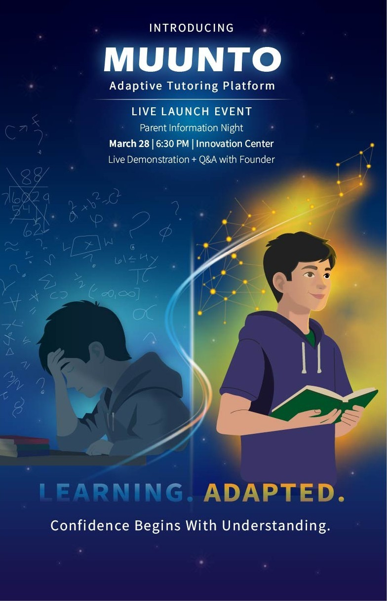
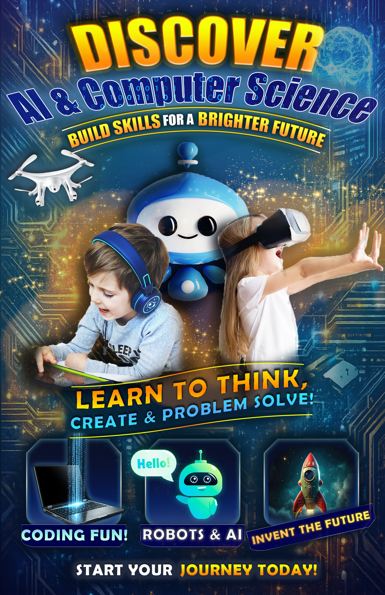
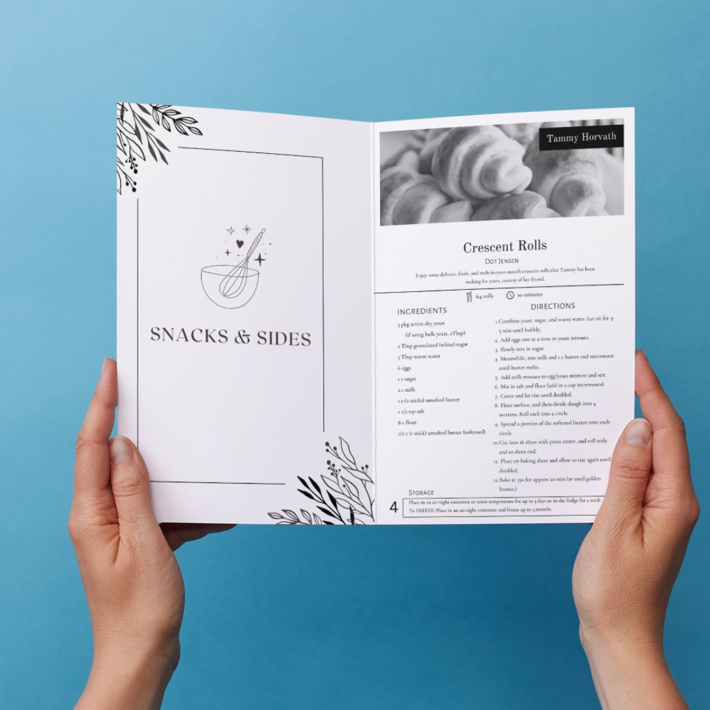
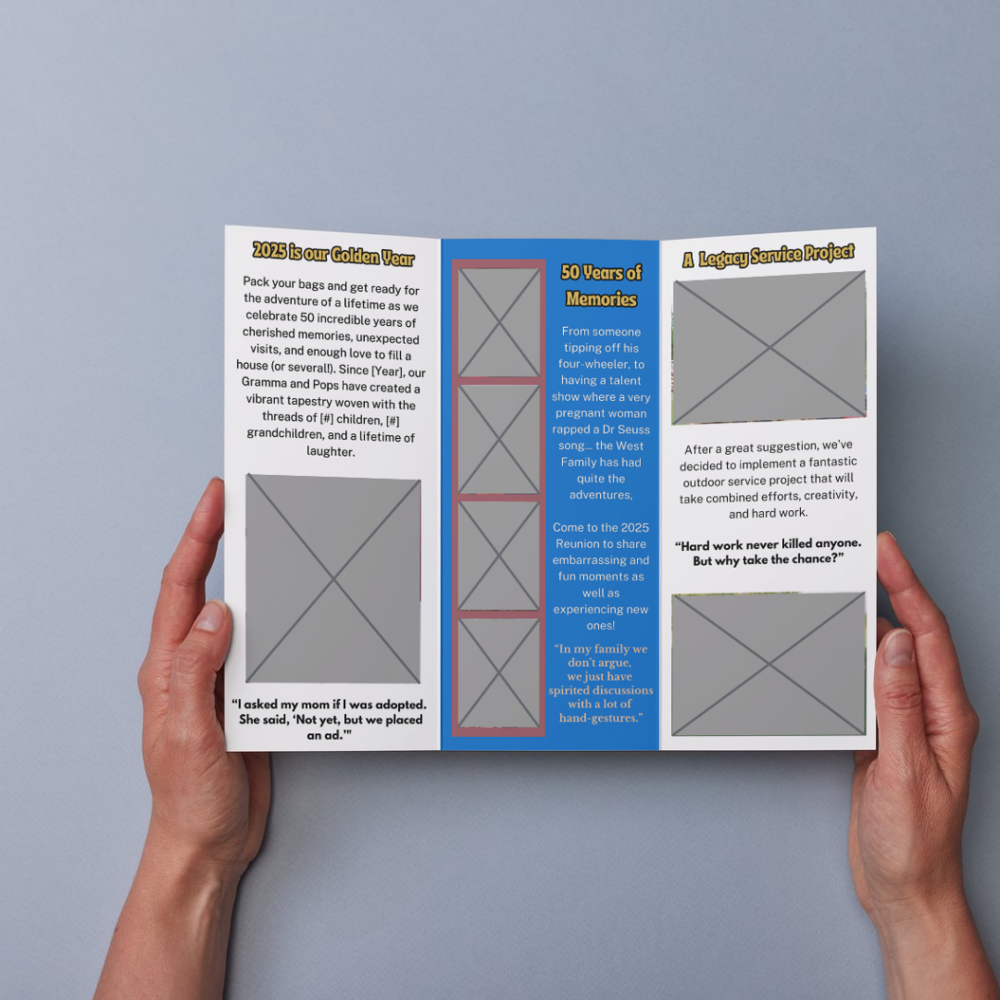
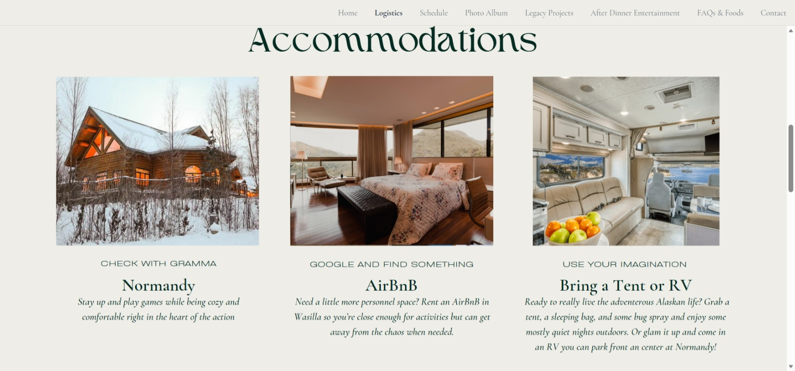
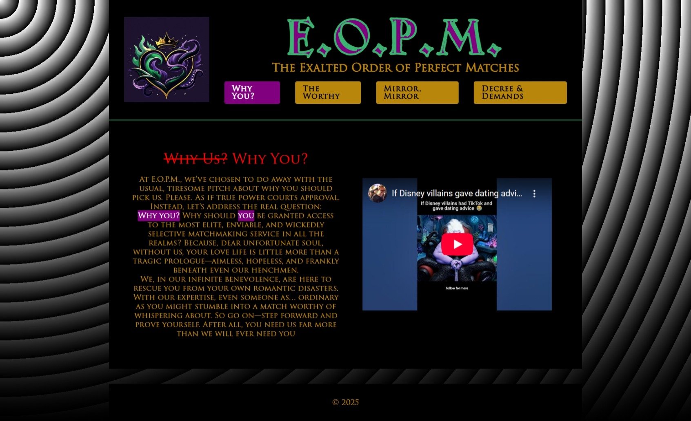

Muunto Educational Brand
Designed in Adobe Illustrator as a launch poster for an educational brand concept for a class. This project highlights visual hierarchy, typography, color harmony, and polished promotional design. *Student Project*
Portfolio
ASU Graphic Information Technology student focused on UX, visual design, and front-end web work. I design digital experiences that make information easier to understand. My work combines UX thinking, UI visual design, and front-end development to turn complex ideas into clear interfaces.


Designed and developed my personal portfolio website using Figma, HTML, and CSS. The project demonstrates front-end development, visual hierarchy, and UX-focused layout design. The site is deployed through GitHub Pages and built using Visual Studio Code.
Designed in Adobe Illustrator as a launch poster for an educational brand concept for a class. This project highlights visual hierarchy, typography, color harmony, and polished promotional design. *Student Project*

Created in Adobe Photoshop as an event promotion piece for a school project using layered imagery, composition, and contrast. This design demonstrates my ability to build attention-grabbing visuals for digital audiences. *Student Project*

Developed the layout and visual design for a collaborative cookbook project using Canva, for a church group focusing on readability, consistent formatting, and inviting editorial presentation.

Designed a brochure in Canva to promote a family reunion event with clear information hierarchy, organized content, and a welcoming visual style tailored to a broad age range.

Designed a website concept using Figma and Canva that organizes event details, expectations, and accommodations into an easy-to-navigate digital experience with user clarity in mind.

A playful homepage concept created with HTML/CSS, GitHub, and Visual Studio Code, that explores bold branding, unconventional visual storytelling, and creative web layout design while still maintaining strong structure and usability. *Student Project*
I'm Andrea Marchant, an Arizona State University Graphic Information Technology student with a growing focus in UX, visual design, and front-end development. My work combines strong design fundamentals with thoughtful communication, and I enjoy creating projects that are both visually polished and easy to understand. I'm currently seeking internship opportunities where I can contribute as a designer, keep building real-world experience, and grow into a UX-centered creative career.
Download Resume